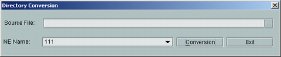

This describes how to convert the files in *.dtd, *.xml, *.mrf, *.bz2, and *.zip formats to files that can be queried and viewed through the Performance Browser Tool.
Prerequisite
The Performance Browser Tool runs normally.
Context
- You can select a directory other than a file. Moreover, the files are unavailable.
- Only performance measurement files and performance counter files can be converted.
- The system saves the converted performance measurement files to the path: LMT installation path\adaptor\clientadaptor\pfbTool\data\NE name\measurement period.
- The system saves the converted performance counter files to the path: LMT installation path\adaptor\clientadaptor\pfbTool\data\NE name.
Procedure
- Choose . The Directory Conversion dialog box is displayed, as shown in Figure 1.
Figure 1 Directory Conversion dialog box
- Click behind the Source File. The Open dialog box is displayed. Select the path where the files to be converted are saved.
- Click Conversion.
Copyright © Huawei Technologies Co., Ltd.